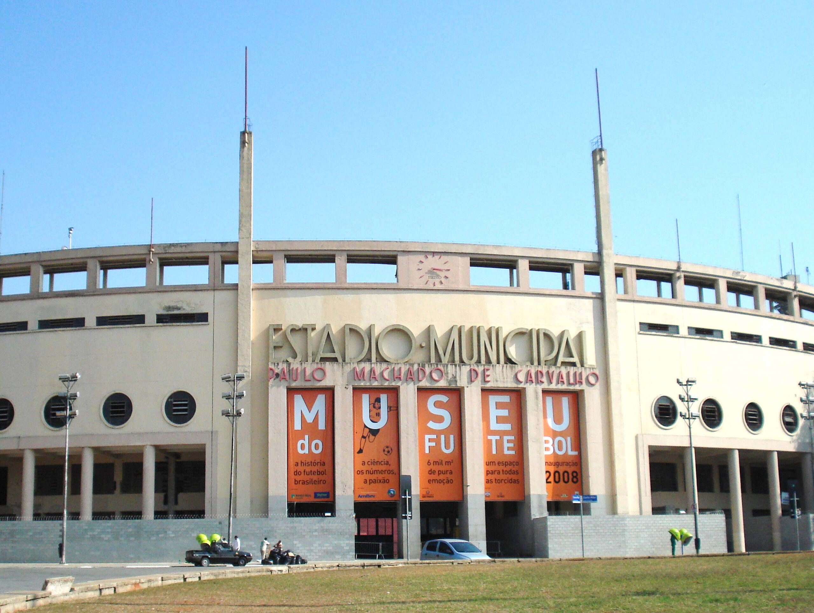
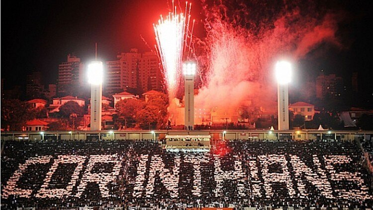

O que é?
O futebol é um esporte coletivo jogado entre duas equipes de 11 jogadores cada, com o objetivo de marcar gols na balizaadversária. O jogo é caracterizado por regras simples, como o uso de pés para chutar a bola e a proibição de tocar a bola comas mãos, exceto pelo goleiro. O futebol é considerado o esporte mais popular do mundo, com cerca de 270 milhões de praticantesglobalmente, e sua origem remonta a práticas similares em várias civilizações antigas, como a China e a Grécia. O futebolmoderno se consolidou na Inglaterra no século XIX, com a criação da FIFA e a primeira Copa do Mundo em 1930.

História
Inaugurado em 27 de abril de 1940 por Getúlio Vargas, o Estádio Municipal Paulo Machado de Carvalho, mais conhecido como Pacaembu, foi construído para ser o mais moderno da América do Sul e um marco do estilo Art Déco em São Paulo. Localizado em um antigo "atoleiro" (significado de Pacaembu em tupi), o complexo foi um símbolo de modernidade e palco importante da Copa do Mundo de 1950. Embora tenha sido a "casa" histórica de diversos clubes paulistas, especialmente o Corinthians, o estádio se destacou como um espaço multiuso e popular.
Localização
Veja abaixo a localização do Estádio do Pacaembu